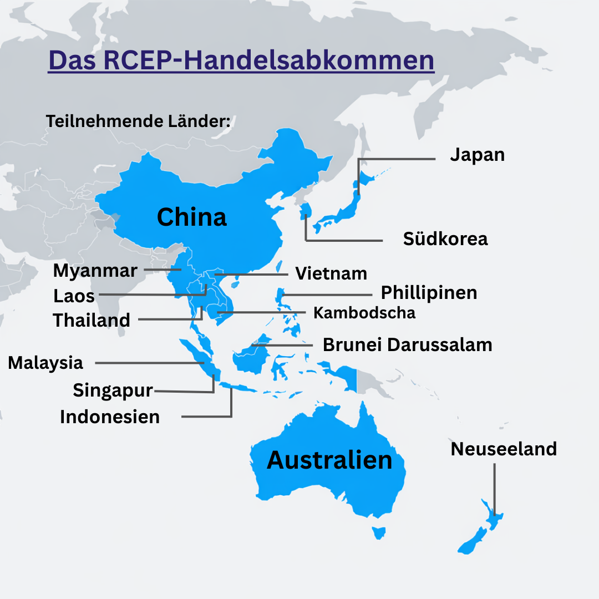
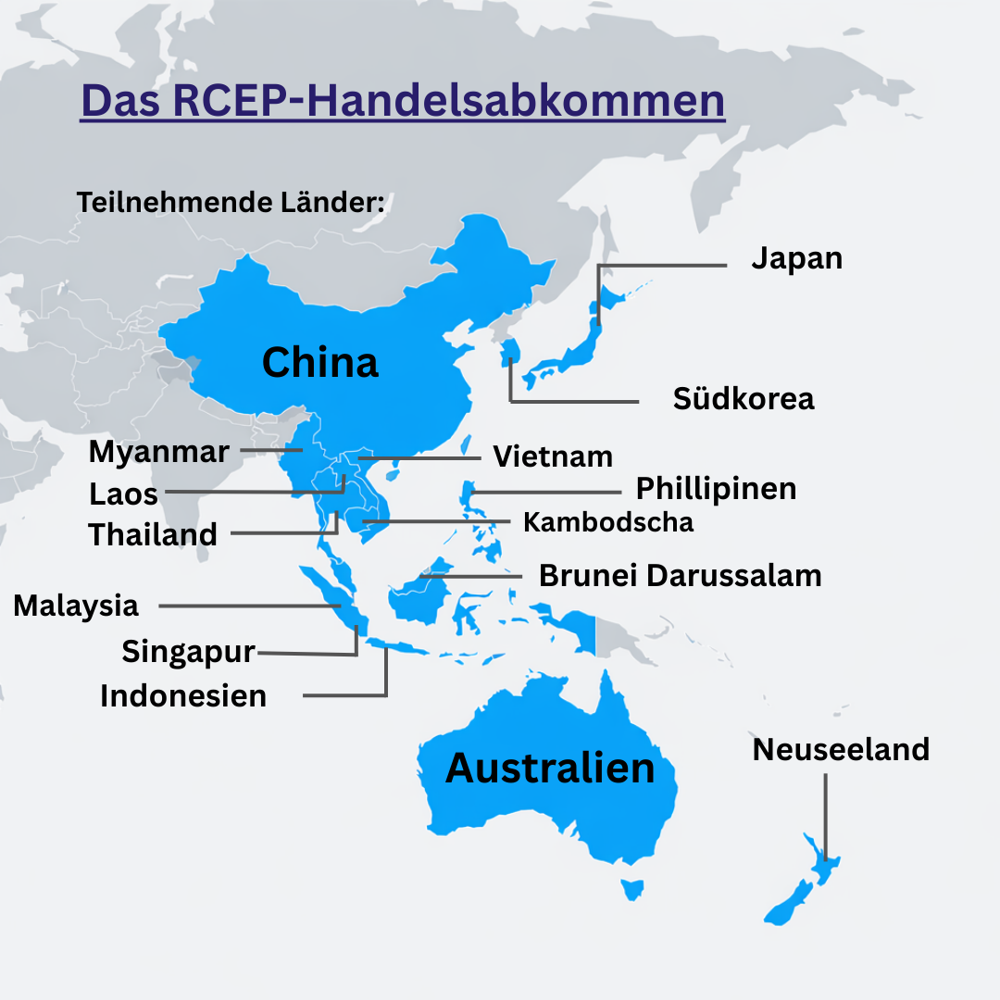

1. Die aktuellen Entwicklungsprozesse im internationalen Handel I. Globalisierung und internationale Verflechtung Die heutigen Entwicklungen im internationalen Handel sind das Resultat neuer wirtschaftlicher, gesellschaftlicher und politischer Rahmenbedingungen.
Unter anderem ist dafür die zunehmende Globalisierung verantwortlich. Das bedeutet, dass wir immer weiter weltweit vernetzt sind, zum Beispiel können wir mit dem Internet innerhalb von wenigen Sekunden eine Nachricht an das andere Ende der Welt verschicken. Das beeinflusst besonders die Herstellung von Gütern, denn die meisten Produkte werden nicht mehr in nur einem Land hergestellt, sondern sie entstehen in mehreren Produktionsschritten, die auf viele verschiedene Länder aufgeteilt. Dieser Prozess der internationalen Arbeitsteilung lässt sich am besten anhand der Herstellung von Smartphones erklären. Die Produktionskette beginnt beispielsweise bei den Rohstoffen: Diese stammen aus Ländern wie Chile, Südafrika, Kongo, Indonesien oder Nigeria, da diese oft bestimmte Rohstoffe in reichlicher Menge haben und so die Rohstoffe für einen billigeren Preis erworben werden können. Anschließend werden aus all diesen Ländern die Rohstoffe für die Herstellung nach China gebracht, wo die Produktion anschließend stattfindet. Nach der Produktion werden die Smartphones dann per Frachtschiffen oder Flugzeugen in alle Länder exportiert – wie zum Beispiel Deutschland. Insgesamt zeigt sich deshalb, wie viele Länder an der Herstellung eines einzigen Smartphones beteiligt sind. Und genau hier entstehen Probleme: Wenn ein Land in der Produktionskette wegen politischer Entscheidungen, Krisen oder Naturkatastrophen seinen Export einschränken muss, dann gerät die ganze Produktionskette ins Stocken. Dies führt dann zu Gewinn- und Umsatzverlusten der Unternehmen, die das Smartphone verkaufen. Diese Unsicherheit und Krisenanfälligkeit möchten Unternehmen natürlich minimieren und weiten ihre Lieferketten auf noch mehr Länder aus, sodass es zu einer noch intensiveren internationalen Verflechtung kommt. Von genau dieser Globalisierung ist deshalb auch der internationale Handel geprägt - es gibt unzählige Handelsströmen, die sich ständig verändern.
II. Ungleichgewichte im internationalen Welthandel
Ein weiterer wichtiger Aspekt ist der technologische Fortschritt. Das Wissen, die Maschinen und die Produktionsverfahren verbreiten sich um Einiges schneller als früher. Das sinkt die Markteintrittsbarriere, das bedeutet, dass auch neue Unternehmen bzw. Schwellenländer qualitativ vergleichbare Produkte auf dem Weltmarkt anbieten können.
Das führt zu einem zunehmenden Wettbewerb, der einen Kostendruck für jedes Unternehmen erzeugt, sodass sich ein Kreislauf bildet, bei dem jedes Unternehmen versucht, seine Produkte so kostengünstig wie möglich herzustellen. In den letzten Jahren sind deswegen starke Ungleichgewichte im internationalen Handel entstanden, manche Länder produzieren viel und verkaufen Produkte, andere Länder konsumieren viele Produkte. Einige Länder weiten folglich ihren Export aus, während andere Importüberschüsse feststellen. Unter Export versteht man den Verkauf von eigenen Gütern und Dienstleistungen ins Ausland und Import meint umgekehrt den Kauf von diesen aus dem Ausland. Dies lässt sich an folgender Grafik zu den größten Exportländern 2025 veranschaulichen:

Mit über 3,5 Billionen US-Dollar an Exporten prägt China die globalen Handelsströme wie kein anderes Land. Früher wurde China als “Werkbank der Welt” bezeichnet,
da es damals hauptsächlich Textilien, Spielzeuge und sonstige Produkte exportierte. Heute ist China jedoch das größte Exportland und ein High-Tech-Produzent, das heißt, dass China nun die Tech-Branche dominieret.
Dank der niedrigen Markteintrittsbarriere, die vorher angesprochen wurde, hat sich China nämlich zu einem führenden Technologie-Standort entwickelt und exportiert nun Elektroautos und elektrische Maschinen
bzw. Geräte, wie Handys, Computer oder Serversysteme. Ein weiterer Grund für diese Exportdominanz ist der eigene Konsum im Land. Das bedeutet, dass der Staat oder die Haushalte besonders wenige Dienstleistungen und Güter nachfragen.
Dieser Konsum ist bei China und Deutschland beispielsweise sehr gering, bei Ländern wie Frankreich oder Spanien aufgrund von Tourismus oder der Binnenwirtschaft (weniger Handel mit dem Ausland, innerländische wirtschaftliche Aktivität) sehr hoch. Daher exportieren diese Länder auch weniger im Vergleich zu Deutschland
(Frankreich exportierte etwa Exporte im Wert von 640 Mrd. US-Dollar und Spanien mit etwa 420 Mrd. US-Dollar). Dieser hohe Konsum trifft auch auf die USA zu, denn trotz der Tatsache, dass die USA von der Fläche her größer als China ist, exportieren sie weniger. Der Konsum liegt unter anderem daran, dass das pro Kopf Einkommen in den USA sehr hoch ist, wodurch die Bevölkerung eine hohe Kaufkraft hat und mehr konsumiert.
Die USA hat aufgrund dessen ein starkes Handelsbilanzdefizit, sie importieren also mehr als sie exportieren. Normalerweise ist ein Handelsbilanzdefizit wirtschaftlich gesehen problematisch, da die eigenen Unternehmen weniger wettbewerbsfähig sind (aufgrund des hohen Imports) und da man sich von anderen Ländern (z.B China) abhängig macht, wenn man so viel importiert.
Die Folgen dieser Ungleichgewichte im aktuellen Welthandel sind immens: Die Exportdominanz Chinas steht nämlich indirekt für Macht, da China unter anderem einen Großteil der globalen Lieferketten kontrolliert, die Preise für viele Produkte setzt und einen geopolitischen Einfluss ausübt, das heißt, dass sich alle Länder von Chinas Export abhängig machen. Diese Abhängigkeiten verleihen Macht,
denn China könnte unter anderem bestimmte Exporte einschränken, sodass die USA (Konsumland) leiden würden, da sie die Produkte nun durch teurere Lieferketten importieren müssten. Aufgrund dessen hat sich 2018 ein Handelskrieg, der beispielsweise von Zöllen geprägt ist, zwischen China und den USA entwickelt, da die USA gegen Chinas Exportdominanz vorgehen wollte. Diese Ungleichgewichte werden auch durch neue Akteure, wie zum Beispiel Russland, verstärkt. Russland hat zwar mit 417 Mrd. US-Dollar die geringsten Exporte der Statistik, ist aber einer der wichtigsten Rohstofflieferanten. Russland exportiert nämlich sehr viel Erdgas und Erdöl sowie Rohstoffen wie Getreide oder Kohle. Nachdem Russland aber im Februar 2022 die Ukraine angegriffen hat, wurden die Lieferketten und der Handel durch den Angriffskrieg für die europäischen Länder sehr unsicher. Deshalb begannen europäische Länder wie Deutschland sich so schnell wie möglich von der Handelsabhängigkeit zu Russland zu entfernen, indem vermehrt in erneuerbare Energien investiert wurde. Darüber hinaus versuchten europäische Länder Russland zu schwächen, indem sie sogenannte Sanktionen verhängten, also z.B durch die Importstopps von russischem Gas und Öl oder die Einführung von Strafzöllen auf russische Exportgüter. Russland reagierte auf diese Sanktionen aber mit einer Ausweitung des Handels auf Länder wie die Türkei, Indien, China oder Afrika. Diese internationale Verflechtung stellt zum Einen Vorteile (diversifizierte Lieferketten, billigere Produktion, politischer Zusammenhalt) dar aber zum Anderen sorgt dies auch für viele Probleme (neue Akteure, Chaos und veränderte Handelsströme).
III. Handelsabkommen
Aufgrund dessen kommt es vermehrt zu sogenannten Handelsabkommen: Ein Handelsabkommen ist eine vertragliche Vereinbarung zwischen mehreren Ländern,
um Handelshemmnisse wie zum Beispiele Importbeschränkungen abzubauen. Das bekannteste Handelsabkommen ist das RCEP (Regional Comprehensive Economic Partnership)-Abkommen. Es trat am 1. Januar 2022 in Kraft und die in der folgenden Karte in blau markierten Länder sind beteiligt:

Man erkennt, dass fast alle südostasiatischen Länder, wie vor allem China, Thailand, Vietnam, Japan oder Südkorea beteiligt sind. Doch was legte das Abkommen eigentlich fest? Das Abkommen schuf die größte Freihandelszone der Welt zwischen den beteiligten Ländern, sodass es zu intensiverem und effizienterem Handel kommen kann, da es nun keine Handelshemmnisse mehr gibt. Politisch gesehen war das Abkommen auch durch den Handelskrieg zwischen den USA und China motiviert, da für China der Handel mit den USA riskanter und unsicherer wurde. Deshalb bildet das RCEP-Abkommen eine langfristige und sichere Alternative für China, um die Abhängigkeiten von den USA zu verringern. Außerdem wird dadurch der regionale Zusammenhalt der beteiligten Länder gestärkt, wie man am Begriff “regional” im Namen “Regional Comprehensive Economic Partnership” erkennt . Für die einzelnen Unternehmen sind solche Freihandelsabkommen essenziell. Es öffnen sich nämlich viele neue Märkte, die Unternehmen nun ohne Einschränkungen (z.B Zölle) nutzen können. Bei dem Abkommen sind nämlich etwa 30% der gesamten Weltbevölkerung beteiligt – ein Großteil davon sind potenzielle Kunden für die Unternehmen. Langfristig steigert sich dadurch der Umsatz der Unternehmen, die Produktion wird folglich ausgebaut und sie werden international wettbewerbsfähiger.
Ein ähnliches, aber aktuelleres Abkommen ist das EU-Indien-Abkommen, welches am 27. Januar 2026 unterzeichnet wurde. Die beteiligten Partner sind die gesamte Europäische Union und Indien. Der Grund für dieses Abkommen ist, dass Indien mit einer Bevölkerung von 1,4 Milliarden Menschen und mit einer starken Präsenz in der Pharmaindustrie sowie im IT-Bereich einer der am schnellsten wachsenden Märkte der Welt ist. Deshalb wurde ebenfalls eine Freihandelszone zwischen Deutschland und Indien vereinbart. Die Europäischen Unternehmen können die indischen Absatzmärkte so noch effizienter und kostengünstiger nutzen und umgekehrt erhält Indien einen besseren Zugang zum EU-Markt. So werden auch indische Exporte in die EU kostengünstiger und wettbewerbsfähiger, wie zum Beispiel Textilien oder pharmazeutische Produkte. Für die EU werden somit außerdem die Handelspartner diversifiziert, das bedeutet, dass die EU nun mehr Lieferketten für bestimmte Produkte hat – speziell für Textilien. So kann sich die EU unabhängiger von China machen und hat im Ernstfall eine Alternative, falls der Handel zwischen der EU und China gestoppt wird. Der Grund dafür ist, dass China in den letzten Jahren zu einem immer unsicheren Handelspartner geworden ist – sei es durch den Handelskrieg zwischen den USA und China, den zusammengebrochenen Lieferketten während der Corona-Pandemie oder den immensen staatlichen Eingriffen von China, wie zum Beispiel Subventionen, Exportkontrollen oder politische Vorgaben. Das Problem dieser staatlichen Eingriffe ist, dass es keine Plansicherheit für die Handelspartner gibt. Wenn China zum Beispiel Exportkontrollen (=Einschränkung bestimmter Exportprodukte) auf Seltene Erden einführt, dann werden globale Lieferketten für fast alle Automobilhersteller unterbrochen. China dominiert nämlich den Markt für Seltene Erden und produziert etwa 85-90% der weltweiten Seltenen Erde – und diese ist unter anderem in der Automobilindustrie ein essenzielles Gut.
2. Die Funktionsweise von Zöllen im aktuellen Welthandel
Aus diesen Beispielen geht hervor, dass der internationale Handel aktuell sehr chaotisch aufgrund von veränderten politische Beziehungen, der Verschiebung von Handelsströmen oder den fragmentierte Lieferketten (z.B durch den Russland-Ukraine Krieg). Neben den oben erwähnten Handelsabkommen, wird in letzter Zeit zunehmend der Zoll als handelspolitisches Instrument genutzt – doch was genau sind Zölle eigentlich? Zölle sind vom Staat erhobene Abgaben auf Waren, die eine geographische Grenze überschreiten (meistens eine Landesgrenze) . Es handelt sich um eine Art Besteuerung, die meist auf Importwaren anstatt Exportwaren anfällt, da ein Exportzoll die eigenen Produkte, die an das Ausland verkauft werden sollen, verteuern würde. Als einfaches Beispiel für einen grundlegenden Zoll ist die USA anzuführen, die 2025 einen 25% Zoll auf Autos der Europäischen Union erhob. Das hatte zur Folge, dass der Exporteur (die EU) für jedes in die USA importierte Auto 25% des Autowerts an die USA zahlen müsste. Bei einem Auto mit einem Wert von 20.000€ wären es dann 25.000€, also 5000€ zusätzlich, die durch den Zoll anfallen. Je nach Zielsetzung, Berechnungsgrundlange und Geltungsbereich gibt es dabei viele unterschiedliche Arten von Zöllen: Das gerade beschriebene Beispiel, bei dem die USA einen prozentualen Aufschlag von 25% auf importierte Ware erhoben hat, ist ein sogenannter Wertzoll. Dies ist die einfachste Zollart und sie ist auch relativ effektiv, denn je teurer die importierte Ware, desto höher der Zoll. Um dagegen einen Zoll unabhängig vom Preis der importierten Ware zu erheben, wird oft der Mengenzoll verwendet. Ein Mengenzoll spielt besonders bei landwirtschaftlichen Produkten, wie Obst, Gemüse, Getreide, Kakao, Zucker oder Ähnlichem eine große Rolle. Der Zoll richtet sich nämlich nach einer spezifischen Menge dieser Produkte. Zum Beispiel könnte ein Zoll von 1€ pro Kilo an einer bestimmten Obstsorte anfallen – egal wie preiswert/teuer dieses Obst ist. Der Mengenzoll ist folglich sehr einheitlich und weist einen geringen Aufwand für die Zollbehörden auf, aber bei günstigen Produkten macht der Mengenzoll einen größeren Preisanteil als bei teureren Waren aus. Das folgt oft dazu, dass Billiganbieter (meist Entwicklungsländer) ihre Produkte nicht mehr wettbewerbsfähig auf dem Weltmarkt verkaufen könnten, da sie durch Mengenzölle ihren Preis anheben müssen. Zölle werden des Weiteren immer mit einem konkreten Ziel eingeführt, weswegen es oft zu sogenannten Strafzöllen kommt. Strafzölle werden gezielt als Reaktion auf einen als unfair empfundenen Handel eines anderen Landes eingeführt werden. Unter anderem führte Trump am 12. März 2025 Strafzölle von 25% auf Aluminium- und Stahlerzeugnisse ein, da er die Handelsstrategien Chinas als unfair empfand. China verschaffte sich nämlich durch staatliche Subventionen (Unterstützungsgelder) einen Wettbewerbsvorteil, da die chinesischen Unternehmen dadurch billiger produzieren konnten und damit auch billiger verkaufen. Trump sah dies als Bedrohung, da die US-Unternehmen preislich nicht mehr mithalten könnten, und reagierte deswegen mit einem Strafzoll. Trump nutzt den Strafzoll gezielt als Druckmittel, da China nun weniger Profit mit dem Export in die USA macht, sodass China gezwungen war, ihren Handel zu ändern, um den USA wieder faire Bedingungen zu geben. Das könnte beispielsweise durch einen Stopp der Subventionen oder einem Handelsabkommen zwischen den USA und China geschehen. Die Funktionsweise und der Einfluss auf die Wirtschaft von Zöllen lassen sich jedoch besonders gut am vereinfachten Modell des erweiterten Wirtschaftskreislaufs erklären:

Der erweiterte Wirtschaftskreislauf eignet sich diesbezüglich besonders, weil er den Geldfluss zwischen Haushalten, Unternehmen, Staat und Ausland abbildet und durch Zölle alle dieser Sektoren beeinflusst werden. Der Staat bildet dabei den hierarchisch gesehen höchsten Sektor, weil er zentrale Einnahmen (Steuern, Zölle) sammelt und diese gezielt an Haushalte und Unternehmen in Form von sogenannten Transferzahlungen verteilt. Transferzahlungen sind zum Beispiel Subventionen für die Unternehmen oder Kindergeld, Sozialhilfe, Bürgergeld oder Strom- und Gaspreiserniedrigungen für die Haushalte. Deshalb ist ein zentrales Ziel von Zöllen oft eine zusätzliche Einnahmequelle, es handelt sich dann um einen sogenannten Fiskalzoll. Ein Fiskalzoll wird erhoben, um die Staatseinnahmen zu stabilisieren und Transferzahlungen an die Unternehmen sowie Haushalte zu erbringen oder um in die Infrastruktur, Industrie und öffentlichen Einrichtungen (Schulen, Krankenhäuser, Kindergärten) zu investieren. Der Fiskalzoll wird oft in Entwicklungsländern erhoben, da dieser eine einfache und stabile Einnahmequelle ist. Entwicklungsländer haben nämlich oft kein ausgebautes Steuersystem, wie wir es in Deutschland haben, weswegen ein Großteil des Geldflusses an den Staat im erweiterten Wirtschaftskreislauf wegfällt. Diese Lücke versuchen Entwicklungsländer dann mit einem Fiskalzoll zu füllen. Die Banken im Wirtschaftkreislauf spielen hierbei eine essentielle Rolle: Sie sind die Vermittler zwischen den einzelnen Akteuren (Staat, Ausland, Haushalte und Unternehmen). Die Banken sind nämlich in der Lage Kredite an die Haushalte und Unternehmen zu verteilen. Ein Kredit ist von der Bank geliehenes Geld, das von den Unternehmen/Haushalten in Zinsen zurückgezahlt werden muss. Kredite ermöglichen den Unternehmen Bruttoinvestitionen in bessere und effizientere Produktion (Maschinen, moderne Technologie, Anlagen oder Lager). Haushalte dagegen können es für den privaten Konsum (Auto, Wohnung, Luxusgüter) nutzen. Das Geld für die Kredite bekommen die Banken entweder vom Staat (oft durch Fiskalzölle) oder vor allem von den Haushalten, die ihr Geld anlegen. Da heutzutage die einzelnen Wirtschaften miteinander in Form von Handel in Kontakt treten, ist das Ausland ebenfalls von hoher Relevanz. Die Haushalte und Unternehmen zahlen nämlich für die Importprodukte an das Ausland, wobei die Unternehmen auch für die eigenen Exportprodukte aus dem Ausland Geld erhalten. Es entsteht somit eine internationale wirtschaftliche Verflechtung. Wenn nun ein Zoll auf die importierte Ware eingeführt wird, dann wird die importierte Ware teurer und der Konsum der Haushalte für diese Ware sinkt. Der Geldfluss von den Haushalten an das Ausland verringert sich daher. Das führt dazu, dass das Ausland weniger Profit mit dem Export macht und das Land, das den Zoll erhoben hat, nun seine eigene heimische Wirtschaft vor ausländischer Konkurrenz schützt. Dieser Zoll wird als Schutzzoll bezeichnet. Wenn nämlich ausländische Unternehmen aufgrund der Zölle ihre Verkaufspreise erhöhen müssen, dann sind die heimischen Unternehmen wettbewerbsfähiger, da für diese keine Extrakosten durch Zölle anfallen. Dadurch wird sozusagen die eigene Wirtschaft geschützt, wie man bereits im Namen “Schutzzoll” erkennt. Aus diesen Beispielen wird klar, dass Zölle nicht nur eine zusätzliche Einnahmequelle sind, sondern vor allem ein handelspolitisches Instrument sind, um die eigene Wirtschaft zu schützen oder Druck auf andere Länder auszuüben.
3. Freihandel und Protektionismus im Vergleich
Nachdem deutlich geworden ist, wie stark Zölle als handelspolitisches Instrument in den internationalen Handel eingreifen können, stellt sich eine grundsätzliche Frage: Wie würde ein internationaler Welthandel aussehen, wenn jedes Land Zölle erhebt (Protektionismus) oder wenn es kaum bis gar keine Zölle gibt (Freihandel)?
Diese beiden Extreme, Freihandel und Protektionismus, bilden mögliche Zukunftsszenarien, deren Auswirkungen sich besonders gut am Beispiel der deutschen Automobilindustrie und deren Unternehmern erklären lässt. Wie vorher nämlich bereits erwähnt wurde, ist Deutschland in hohem Maße exportorientiert und das unter anderem auch in der Automobilindustrie –
bekannte Vertreter sind dabei Audi, Mercedes, BMW. Die folgende Statistik veranschaulich die aktuelle Krise der deutschen Automobilunternehmen:

Die Statistik zeigt den Umsatzvergleich einzelner Automobilhersteller 2024 und 2025 in Milliarden Euro. Es wird schnell klar, dass jeder einzelne Hersteller große Verluste gemacht hat. Bei VW waren es 33%, bei BMW 29%, bei Mercedes 56% und bei Porsche sogar 67% weniger Umsatz als im vorigen Jahr 2024. Diese immense Krise in der Automobilindustrie hat vielerlei Ursachen. Ein großes Problem sind die Konkurrenten im internationalen Raum. Da Deutschland die Autos hauptsächlich exportiert, konkurriert es auch mit China und US-Unternehmen, darunter auch Tesla. Zudem ließ sich in den letzten Jahren ein zunehmender Trend an Elektro-Autos feststellen, bei denen China der aktuelle Weltmarktführer ist. Auch durch die neuen Klimaregelungen, zum Beispiel die Klimaziele oder das von der EU vorgesehene Verbrennungsmotor-Ende bis 2035, erschweren die Bedingungen für die deutsche Automobilindustrie. Was wäre also, wenn es in den nächsten 20 Jahren nur noch Freihandel oder Protektionismus im internationalen Welthandel gäbe? Diese möglichen Szenarien für die deutsche Automobilindustrie werden wir im Folgenden betrachten.
I. Uneingeschränkter Freihandel
Wie der Name schon verrät, soll Freihandel einen “freien Handel” ermöglichen, das heißt, dass Waren und Dienstleistungen ohne staatliche Handelshemmnisse zwischen den Ländern ausgetauscht werden. Unter Handelshemmnisse würden unter anderem Zölle, Mengenbeschränkungen (Obergrenze für den Import/Export einer bestimmten Ware) und vor allem sogenannte Dumping-Preise. Dumping-Preise entstehen, wenn Unternehmen ihre Ware deutlich unter dem Marktpreis anbieten und sich damit einen künstlichen Vorteil erschaffen, da billige Ware automatisch mehr nachgefragt wird. Dies geschieht oft durch Subventionen (staatliche Unterstützung) bestimmter Branchen, um Unternehmen dank der Dumping-Preise wettbewerbsfähiger zu machen. All diese staatlichen Eingriffe sollen im Freihandel deshalb nicht geschehen. Auf den ersten Blick scheint der Freihandel perfekt – doch in der Praxis zeigt sich, dass es ohne staatliche Eingriffe immer noch Probleme gibt. Betrachten wir dennoch zunächst das Best-Case-Szenario in den ersten 5 Jahren eines vollständigen Freihandels: Zunächst würde die deutsche Automobilindustrie die neuen Märkte und Chancen (z.B günstigere Produktion) analysieren. Damit könnte Deutschland dann den Export in neue Absatzmärkte, wie Südostasien oder Lateinamerika ausweiten. Dieser Prozess der Markterschließung wird zunächst leichte Umsatzerhöhungen ermöglichen. Trotzdem bleiben Unternehmen wie Tesla bestehen, weswegen Deutschland schnell beginnen würde, selbst in Elektrotechnik, Batterien oder E-Autos zu investieren, um wettbewerbsfähig zu bleiben. Durch den Freihandel können dann auch deutsche E-Autos in hoher Stückzahl in jeden Markt exportiert werden – der deutsche Marktanteil im internationalen Handel und der Umsatz nehmen dann signifikant zu. Damit entwickelt sich dann eine Spirale, in der die deutsche Automobilindustrie immer mehr und effizienter produziert und eine präsentere Rolle im Welthandel einnimmt. Durch den Ausbau der Produktion entstehen dann ebenfalls Arbeitsplätze und die deutsche Wirtschaft wird erheblich angekurbelt. Natürlich werden China und die USA dieselben Pläne verfolgen, doch im besten Fall erlangt Deutschland einen langfristigen Wettbewerbsvorteil aufgrund der bereits bestehenden Markenbekanntheit (BMW, Mercedes, ...) und der technologischen Innovationskraft, die sich im Laufe des Freihandels entwickelt. Nach weiteren 15 Jahren würde sich die deutsche Automobilindustrie zu einem führenden Anbieter hochwertiger Elektro-Autos entwickelt haben. Schwellenländer und asiatische Länder schaffen eine hohe Nachfrage nach den deutschen Autos. Die deutsche Automobilindustrie ist somit modernisiert, international wettbewerbsfähig und exportstark. Deutschland ist damit einer der größten Technologie- und Innovationsstandorte und die deutschen Automobilunternehmen spielen eine essenzielle Rolle. Im Worst-Case-Szenario öffnen sich zwar die Absatzmärkte für die deutsche Automobilindustrie, aber die gesamte Konkurrenz (China, USA) bleibt bestehen und nutzen sie noch effizienter. China könnte dann den Markt der E-Autos mit günstigen Preisen dominieren und die USA würde den Markt der SUVs und Elektro-SUVs anführen. Die deutschen Marktanteile gehen immer mehr verloren und der technologische Druck für neue deutsche Innovationen wächst konstant. Das Problem wären jedoch die bereits bestehenden Klimaregelungungen oder das Verbrennerverbot. Diese würden die Produktionskosten für die Unternehmen erhöhen, sodass weniger Investitionen in neue Innovationen möglich sind. Es käme daher in den ersten 5 Jahren zu Stellenabbauten in der Verbrennerproduktion und zu weiteren Verlusten sowie einer Abwärtsspirale, in der die deutschen Automobilunternehmen immer weniger Einfluss im Welthandel haben. Nach weiteren 15 Jahren verschärfen sich die Wettbewerbsnachteile: China und die USA übernehmen große Marktanteile, auch in Europa, und dominieren die Automobilbranche. Die deutschen Automobilunternehmen kämpfen um ihr Überleben. Es entwickeln sich viele Defizite, zum Beispiel ein technologischer Rückstand bei E-Autos, Batterien und autonomen Fahren im Vergleich zu China. Nach 20 Jahren würden sich die deutschen Automobilunternehmen dann im Worst-Case-Szenario in einer vollständigen Krise befinden.
II. Reiner Protektionismus
Unter Protektionismus versteht man genau das Gegenteil von Freihandel: Länder versuchen durch protektionistische (engl. “protect” schützende) Maßnahmen ihre eigene Wirtschaft zu sichern und anzukurbeln. Dies geschieht durch staatliche Eingriffe in den Handel (Handelshemmnisse) , zum Beispiel durch Zölle, Subventionen für Unternehmen, die Dumping-Preise ermöglichen, oder Mengenbegrenzungen. Insgesamt sollen also alle möglichen Importe erschwert werden, sodass die eigene Wirtschaft im Vordergrund steht. Das Best-Case-Szenario eines vollständigen Protektionismus, den jedes Land ausübt, würde wie folgt aussehen: In den ersten 5 Jahren würde sich die deutsche Automobilindustrie von ihrer Krise erholen können, da es durch den Protektionismus nun hohe Zölle auf Importautos aus China und den USA geben würde. Das hätte zur Folge, dass diese teurer als die deutschen, heimischen Autos sind, weswegen die Nachfrage nach deutschen Autos im Inland steigen würde. Trotz der ausländischen Konkurrenz generieren die Automobilhersteller dadurch stabile Einnahmen im Inland. Zudem kann der Staat nun die Produktionskapazitäten der Automobilunternehmen unterstützen. Dadurch werden die deutschen Autos wettbewerbsfähiger und attraktiver – da sie effizienter hergestellt werden können. Auch Investitionen der Unternehmen selbst sind nun besser möglich, weil die stabilen Einnahmen durch den Protektionismus den Unternehmen Planungssicherheit geben. Das Risiko ist somit um Einiges geringer, weswegen Investitionen sich lohnen würden. Der Protektionismus gibt der deutschen Automobilindustrie folglich Zeit, sich von ihrer Krise zu erholen und sich durch neue Innovationen (z.B Automodelle) sogar weiterzuentwickeln. Dadurch werden zum Einen die Arbeitsplätze gesichert und zum Anderen entstehen auch neue, sodass auch die deutsche Wirtschaft profitiert. In den ersten 5 Jahren könnte der Protektionismus eine starke Entlastung der deutschen Automobilhersteller ermöglichen. In den nächsten 15 Jahren ständen die deutschen Innovationen dann in den Vordergrund – Deutschland kann dann beginnen strategisch bestimmte Exportmärkte zu wählen, um seine neue Automodelle zu verkaufen. Es gibt im Gegensatz zum Freihandel nämlich keinen Zwang mit allen Märkten zu konkurrieren. Nichtsdestotrotz lassen sich manche Unsicherheiten und Probleme beim Protektionismus feststellen, wie man auch im Moment an den protektionistischen Maßnahmen der USA feststellen kann. Das Worst-Case-Szenario ist davon geprägt, dass sich der Protektionismus “hochschaukelt”. Jedes Land möchte nämlich die eigene Wirtschaft bestmöglich schützen. Wenn beispielsweise Deutschland Zölle auf chinesische E-Autos erhebt, würde China mit sogenannten Gegenzöllen auf deutsche Autos reagieren. Es entwickelt sich damit ein Handelskrieg, der oft verheerende Folgen trägt. Unter anderem verlieren die beteiligten Länder ihre Vertrauenswürdigkeit als zukünftige Handelspartner. Dieser Vertrauensverlust kann zu weniger Auslandsinvestitionen, weniger Handel und damit zu einem volkswirtschaftlichen Schaden führen. Das führt dazu, dass sich jedes Land immer weiter isoliert, die Handelsbarrieren immer größer werden und der Austausch immer geringer. Politisch gesehen würde dies zu weniger Zusammenhalt führen und wirtschaftlich gesehen nimmt die internationale Verflechtung immer weiter ab. Das bedeutet, dass globale Lieferketten teilweise wegfallen und die Waren verstärkt im eigenen Land produziert werden müssen. Unternehmen müssen daher eine teurere Alternative, wie zum Beispiel die Produktion im eigenen Land, suchen, wodurch der Gewinn natürlich verringert wird. Die deutschen Automobilhersteller kaufen die Ressourcen aus unzähligen verschiedenen Ländern, doch beim Protektionismus wären die Kosten und Einschränkungen für den Kauf zu groß. Im schlimmsten Fall gäbe es dann nach 20 Jahren einen tiefen strukturellen Schaden, der von finanzieller Instabilität und einem technologischen Rückstand der deutschen Automobilhersteller geprägt ist – da Investitionen aufgrund der unsicheren Lieferketten kaum möglich gewesen wären. Damit würden die deutschen Autos teurer, unattraktiver und weniger wettbewerbsfähig auf dem Weltmarkt sein. Durch diesen Wettbewerbsnachteil müssten die Unternehmen dann konstante Verlust feststellen.
III. Interview mit einem Experten
Im Zuge dieser immensen Krise der Automobilindustrie – die ziemlich aussichtslos erscheint – haben wir deswegen den Experten Bernhard Eich befragt. Bernhard Eich ist seit über 15 Jahren Mitarbeiter bei BMW.
II. Ungleichgewichte im internationalen Welthandel
Ein weiterer wichtiger Aspekt ist der technologische Fortschritt. Das Wissen, die Maschinen und die Produktionsverfahren verbreiten sich um Einiges schneller als früher. Das sinkt die Markteintrittsbarriere, das bedeutet, dass auch neue Unternehmen bzw. Schwellenländer qualitativ vergleichbare Produkte auf dem Weltmarkt anbieten können. Das führt zu einem zunehmenden Wettbewerb, der einen Kostendruck für jedes Unternehmen erzeugt, sodass sich ein Kreislauf bildet, bei dem jedes Unternehmen versucht, seine Produkte so kostengünstig wie möglich herzustellen. In den letzten Jahren sind deswegen starke Ungleichgewichte im internationalen Handel entstanden, manche Länder produzieren viel und verkaufen Produkte, andere Länder konsumieren viele Produkte. Einige Länder weiten folglich ihren Export aus, während andere Importüberschüsse feststellen. Unter Export versteht man den Verkauf von eigenen Gütern und Dienstleistungen ins Ausland und Import meint umgekehrt den Kauf von diesen aus dem Ausland. Dies lässt sich an folgender Grafik zu den größten Exportländern 2025 veranschaulichen: Mit über 3,5 Billionen US-Dollar an Exporten prägt China die globalen Handelsströme wie kein anderes Land. Früher wurde China als “Werkbank der Welt” bezeichnet, da es damals hauptsächlich Textilien, Spielzeuge und sonstige Produkte exportierte. Heute ist China jedoch das größte Exportland und ein High-Tech-Produzent, das heißt, dass China nun die Tech-Branche dominieret. Dank der niedrigen Markteintrittsbarriere, die vorher angesprochen wurde, hat sich China nämlich zu einem führenden Technologie-Standort entwickelt und exportiert nun Elektroautos und elektrische Maschinen bzw. Geräte, wie Handys, Computer oder Serversysteme. Ein weiterer Grund für diese Exportdominanz ist der eigene Konsum im Land. Das bedeutet, dass der Staat oder die Haushalte besonders wenige Dienstleistungen und Güter nachfragen. Dieser Konsum ist bei China und Deutschland beispielsweise sehr gering, bei Ländern wie Frankreich oder Spanien aufgrund von Tourismus oder der Binnenwirtschaft (weniger Handel mit dem Ausland, innerländische wirtschaftliche Aktivität) sehr hoch. Daher exportieren diese Länder auch weniger im Vergleich zu Deutschland (Frankreich exportierte etwa Exporte im Wert von 640 Mrd. US-Dollar und Spanien mit etwa 420 Mrd. US-Dollar). Dieser hohe Konsum trifft auch auf die USA zu, denn trotz der Tatsache, dass die USA von der Fläche her größer als China ist, exportieren sie weniger. Der Konsum liegt unter anderem daran, dass das pro Kopf Einkommen in den USA sehr hoch ist, wodurch die Bevölkerung eine hohe Kaufkraft hat und mehr konsumiert. Die USA hat aufgrund dessen ein starkes Handelsbilanzdefizit, sie importieren also mehr als sie exportieren. Normalerweise ist ein Handelsbilanzdefizit wirtschaftlich gesehen problematisch, da die eigenen Unternehmen weniger wettbewerbsfähig sind (aufgrund des hohen Imports) und da man sich von anderen Ländern (z.B China) abhängig macht, wenn man so viel importiert. Die Folgen dieser Ungleichgewichte im aktuellen Welthandel sind immens: Die Exportdominanz Chinas steht nämlich indirekt für Macht, da China unter anderem einen Großteil der globalen Lieferketten kontrolliert, die Preise für viele Produkte setzt und einen geopolitischen Einfluss ausübt, das heißt, dass sich alle Länder von Chinas Export abhängig machen. Diese Abhängigkeiten verleihen Macht, denn China könnte unter anderem bestimmte Exporte einschränken, sodass die USA (Konsumland) leiden würden, da sie die Produkte nun durch teurere Lieferketten importieren müssten. Aufgrund dessen hat sich 2018 ein Handelskrieg, der beispielsweise von Zöllen geprägt ist, zwischen China und den USA entwickelt, da die USA gegen Chinas Exportdominanz vorgehen wollte. Diese Ungleichgewichte werden auch durch neue Akteure, wie zum Beispiel Russland, verstärkt. Russland hat zwar mit 417 Mrd. US-Dollar die geringsten Exporte der Statistik, ist aber einer der wichtigsten Rohstofflieferanten. Russland exportiert nämlich sehr viel Erdgas und Erdöl sowie Rohstoffen wie Getreide oder Kohle. Nachdem Russland aber im Februar 2022 die Ukraine angegriffen hat, wurden die Lieferketten und der Handel durch den Angriffskrieg für die europäischen Länder sehr unsicher. Deshalb begannen europäische Länder wie Deutschland sich so schnell wie möglich von der Handelsabhängigkeit zu Russland zu entfernen, indem vermehrt in erneuerbare Energien investiert wurde. Darüber hinaus versuchten europäische Länder Russland zu schwächen, indem sie sogenannte Sanktionen verhängten, also z.B durch die Importstopps von russischem Gas und Öl oder die Einführung von Strafzöllen auf russische Exportgüter. Russland reagierte auf diese Sanktionen aber mit einer Ausweitung des Handels auf Länder wie die Türkei, Indien, China oder Afrika. Diese internationale Verflechtung stellt zum Einen Vorteile (diversifizierte Lieferketten, billigere Produktion, politischer Zusammenhalt) dar aber zum Anderen sorgt dies auch für viele Probleme (neue Akteure, Chaos und veränderte Handelsströme).
III. Handelsabkommen
Aufgrund dessen kommt es vermehrt zu sogenannten Handelsabkommen: Ein Handelsabkommen ist eine vertragliche Vereinbarung zwischen mehreren Ländern, um Handelshemmnisse wie zum Beispiele Importbeschränkungen abzubauen. Das bekannteste Handelsabkommen ist das RCEP (Regional Comprehensive Economic Partnership)-Abkommen. Es trat am 1. Januar 2022 in Kraft und die in der folgenden Karte in blau markierten Länder sind beteiligt:
Man erkennt, dass fast alle südostasiatischen Länder, wie vor allem China, Thailand, Vietnam, Japan oder Südkorea beteiligt sind. Doch was legte das Abkommen eigentlich fest? Das Abkommen schuf die größte Freihandelszone der Welt zwischen den beteiligten Ländern, sodass es zu intensiverem und effizienterem Handel kommen kann, da es nun keine Handelshemmnisse mehr gibt. Politisch gesehen war das Abkommen auch durch den Handelskrieg zwischen den USA und China motiviert, da für China der Handel mit den USA riskanter und unsicherer wurde. Deshalb bildet das RCEP-Abkommen eine langfristige und sichere Alternative für China, um die Abhängigkeiten von den USA zu verringern. Außerdem wird dadurch der regionale Zusammenhalt der beteiligten Länder gestärkt, wie man am Begriff “regional” im Namen “Regional Comprehensive Economic Partnership” erkennt . Für die einzelnen Unternehmen sind solche Freihandelsabkommen essenziell. Es öffnen sich nämlich viele neue Märkte, die Unternehmen nun ohne Einschränkungen (z.B Zölle) nutzen können. Bei dem Abkommen sind nämlich etwa 30% der gesamten Weltbevölkerung beteiligt – ein Großteil davon sind potenzielle Kunden für die Unternehmen. Langfristig steigert sich dadurch der Umsatz der Unternehmen, die Produktion wird folglich ausgebaut und sie werden international wettbewerbsfähiger.
Ein ähnliches, aber aktuelleres Abkommen ist das EU-Indien-Abkommen, welches am 27. Januar 2026 unterzeichnet wurde. Die beteiligten Partner sind die gesamte Europäische Union und Indien. Der Grund für dieses Abkommen ist, dass Indien mit einer Bevölkerung von 1,4 Milliarden Menschen und mit einer starken Präsenz in der Pharmaindustrie sowie im IT-Bereich einer der am schnellsten wachsenden Märkte der Welt ist. Deshalb wurde ebenfalls eine Freihandelszone zwischen Deutschland und Indien vereinbart. Die Europäischen Unternehmen können die indischen Absatzmärkte so noch effizienter und kostengünstiger nutzen und umgekehrt erhält Indien einen besseren Zugang zum EU-Markt. So werden auch indische Exporte in die EU kostengünstiger und wettbewerbsfähiger, wie zum Beispiel Textilien oder pharmazeutische Produkte. Für die EU werden somit außerdem die Handelspartner diversifiziert, das bedeutet, dass die EU nun mehr Lieferketten für bestimmte Produkte hat – speziell für Textilien. So kann sich die EU unabhängiger von China machen und hat im Ernstfall eine Alternative, falls der Handel zwischen der EU und China gestoppt wird. Der Grund dafür ist, dass China in den letzten Jahren zu einem immer unsicheren Handelspartner geworden ist – sei es durch den Handelskrieg zwischen den USA und China, den zusammengebrochenen Lieferketten während der Corona-Pandemie oder den immensen staatlichen Eingriffen von China, wie zum Beispiel Subventionen, Exportkontrollen oder politische Vorgaben. Das Problem dieser staatlichen Eingriffe ist, dass es keine Plansicherheit für die Handelspartner gibt. Wenn China zum Beispiel Exportkontrollen (=Einschränkung bestimmter Exportprodukte) auf Seltene Erden einführt, dann werden globale Lieferketten für fast alle Automobilhersteller unterbrochen. China dominiert nämlich den Markt für Seltene Erden und produziert etwa 85-90% der weltweiten Seltenen Erde – und diese ist unter anderem in der Automobilindustrie ein essenzielles Gut.
2. Die Funktionsweise von Zöllen im aktuellen Welthandel
Aus diesen Beispielen geht hervor, dass der internationale Handel aktuell sehr chaotisch aufgrund von veränderten politische Beziehungen, der Verschiebung von Handelsströmen oder den fragmentierte Lieferketten (z.B durch den Russland-Ukraine Krieg). Neben den oben erwähnten Handelsabkommen, wird in letzter Zeit zunehmend der Zoll als handelspolitisches Instrument genutzt – doch was genau sind Zölle eigentlich? Zölle sind vom Staat erhobene Abgaben auf Waren, die eine geographische Grenze überschreiten (meistens eine Landesgrenze) . Es handelt sich um eine Art Besteuerung, die meist auf Importwaren anstatt Exportwaren anfällt, da ein Exportzoll die eigenen Produkte, die an das Ausland verkauft werden sollen, verteuern würde. Als einfaches Beispiel für einen grundlegenden Zoll ist die USA anzuführen, die 2025 einen 25% Zoll auf Autos der Europäischen Union erhob. Das hatte zur Folge, dass der Exporteur (die EU) für jedes in die USA importierte Auto 25% des Autowerts an die USA zahlen müsste. Bei einem Auto mit einem Wert von 20.000€ wären es dann 25.000€, also 5000€ zusätzlich, die durch den Zoll anfallen. Je nach Zielsetzung, Berechnungsgrundlange und Geltungsbereich gibt es dabei viele unterschiedliche Arten von Zöllen: Das gerade beschriebene Beispiel, bei dem die USA einen prozentualen Aufschlag von 25% auf importierte Ware erhoben hat, ist ein sogenannter Wertzoll. Dies ist die einfachste Zollart und sie ist auch relativ effektiv, denn je teurer die importierte Ware, desto höher der Zoll. Um dagegen einen Zoll unabhängig vom Preis der importierten Ware zu erheben, wird oft der Mengenzoll verwendet. Ein Mengenzoll spielt besonders bei landwirtschaftlichen Produkten, wie Obst, Gemüse, Getreide, Kakao, Zucker oder Ähnlichem eine große Rolle. Der Zoll richtet sich nämlich nach einer spezifischen Menge dieser Produkte. Zum Beispiel könnte ein Zoll von 1€ pro Kilo an einer bestimmten Obstsorte anfallen – egal wie preiswert/teuer dieses Obst ist. Der Mengenzoll ist folglich sehr einheitlich und weist einen geringen Aufwand für die Zollbehörden auf, aber bei günstigen Produkten macht der Mengenzoll einen größeren Preisanteil als bei teureren Waren aus. Das folgt oft dazu, dass Billiganbieter (meist Entwicklungsländer) ihre Produkte nicht mehr wettbewerbsfähig auf dem Weltmarkt verkaufen könnten, da sie durch Mengenzölle ihren Preis anheben müssen. Zölle werden des Weiteren immer mit einem konkreten Ziel eingeführt, weswegen es oft zu sogenannten Strafzöllen kommt. Strafzölle werden gezielt als Reaktion auf einen als unfair empfundenen Handel eines anderen Landes eingeführt werden. Unter anderem führte Trump am 12. März 2025 Strafzölle von 25% auf Aluminium- und Stahlerzeugnisse ein, da er die Handelsstrategien Chinas als unfair empfand. China verschaffte sich nämlich durch staatliche Subventionen (Unterstützungsgelder) einen Wettbewerbsvorteil, da die chinesischen Unternehmen dadurch billiger produzieren konnten und damit auch billiger verkaufen. Trump sah dies als Bedrohung, da die US-Unternehmen preislich nicht mehr mithalten könnten, und reagierte deswegen mit einem Strafzoll. Trump nutzt den Strafzoll gezielt als Druckmittel, da China nun weniger Profit mit dem Export in die USA macht, sodass China gezwungen war, ihren Handel zu ändern, um den USA wieder faire Bedingungen zu geben. Das könnte beispielsweise durch einen Stopp der Subventionen oder einem Handelsabkommen zwischen den USA und China geschehen. Die Funktionsweise und der Einfluss auf die Wirtschaft von Zöllen lassen sich jedoch besonders gut am vereinfachten Modell des erweiterten Wirtschaftskreislaufs erklären: Der erweiterte Wirtschaftskreislauf eignet sich diesbezüglich besonders, weil er den Geldfluss zwischen Haushalten, Unternehmen, Staat und Ausland abbildet und durch Zölle alle dieser Sektoren beeinflusst werden. Der Staat bildet dabei den hierarchisch gesehen höchsten Sektor, weil er zentrale Einnahmen (Steuern, Zölle) sammelt und diese gezielt an Haushalte und Unternehmen in Form von sogenannten Transferzahlungen verteilt. Transferzahlungen sind zum Beispiel Subventionen für die Unternehmen oder Kindergeld, Sozialhilfe, Bürgergeld oder Strom- und Gaspreiserniedrigungen für die Haushalte. Deshalb ist ein zentrales Ziel von Zöllen oft eine zusätzliche Einnahmequelle, es handelt sich dann um einen sogenannten Fiskalzoll. Ein Fiskalzoll wird erhoben, um die Staatseinnahmen zu stabilisieren und Transferzahlungen an die Unternehmen sowie Haushalte zu erbringen oder um in die Infrastruktur, Industrie und öffentlichen Einrichtungen (Schulen, Krankenhäuser, Kindergärten) zu investieren. Der Fiskalzoll wird oft in Entwicklungsländern erhoben, da dieser eine einfache und stabile Einnahmequelle ist. Entwicklungsländer haben nämlich oft kein ausgebautes Steuersystem, wie wir es in Deutschland haben, weswegen ein Großteil des Geldflusses an den Staat im erweiterten Wirtschaftskreislauf wegfällt. Diese Lücke versuchen Entwicklungsländer dann mit einem Fiskalzoll zu füllen. Die Banken im Wirtschaftkreislauf spielen hierbei eine essentielle Rolle: Sie sind die Vermittler zwischen den einzelnen Akteuren (Staat, Ausland, Haushalte und Unternehmen). Die Banken sind nämlich in der Lage Kredite an die Haushalte und Unternehmen zu verteilen. Ein Kredit ist von der Bank geliehenes Geld, das von den Unternehmen/Haushalten in Zinsen zurückgezahlt werden muss. Kredite ermöglichen den Unternehmen Bruttoinvestitionen in bessere und effizientere Produktion (Maschinen, moderne Technologie, Anlagen oder Lager). Haushalte dagegen können es für den privaten Konsum (Auto, Wohnung, Luxusgüter) nutzen. Das Geld für die Kredite bekommen die Banken entweder vom Staat (oft durch Fiskalzölle) oder vor allem von den Haushalten, die ihr Geld anlegen. Da heutzutage die einzelnen Wirtschaften miteinander in Form von Handel in Kontakt treten, ist das Ausland ebenfalls von hoher Relevanz. Die Haushalte und Unternehmen zahlen nämlich für die Importprodukte an das Ausland, wobei die Unternehmen auch für die eigenen Exportprodukte aus dem Ausland Geld erhalten. Es entsteht somit eine internationale wirtschaftliche Verflechtung. Wenn nun ein Zoll auf die importierte Ware eingeführt wird, dann wird die importierte Ware teurer und der Konsum der Haushalte für diese Ware sinkt. Der Geldfluss von den Haushalten an das Ausland verringert sich daher. Das führt dazu, dass das Ausland weniger Profit mit dem Export macht und das Land, das den Zoll erhoben hat, nun seine eigene heimische Wirtschaft vor ausländischer Konkurrenz schützt. Dieser Zoll wird als Schutzzoll bezeichnet. Wenn nämlich ausländische Unternehmen aufgrund der Zölle ihre Verkaufspreise erhöhen müssen, dann sind die heimischen Unternehmen wettbewerbsfähiger, da für diese keine Extrakosten durch Zölle anfallen. Dadurch wird sozusagen die eigene Wirtschaft geschützt, wie man bereits im Namen “Schutzzoll” erkennt. Aus diesen Beispielen wird klar, dass Zölle nicht nur eine zusätzliche Einnahmequelle sind, sondern vor allem ein handelspolitisches Instrument sind, um die eigene Wirtschaft zu schützen oder Druck auf andere Länder auszuüben.
3. Freihandel und Protektionismus im Vergleich
Nachdem deutlich geworden ist, wie stark Zölle als handelspolitisches Instrument in den internationalen Handel eingreifen können, stellt sich eine grundsätzliche Frage: Wie würde ein internationaler Welthandel aussehen, wenn jedes Land Zölle erhebt (Protektionismus) oder wenn es kaum bis gar keine Zölle gibt (Freihandel)? Diese beiden Extreme, Freihandel und Protektionismus, bilden mögliche Zukunftsszenarien, deren Auswirkungen sich besonders gut am Beispiel der deutschen Automobilindustrie und deren Unternehmern erklären lässt. Wie vorher nämlich bereits erwähnt wurde, ist Deutschland in hohem Maße exportorientiert und das unter anderem auch in der Automobilindustrie – bekannte Vertreter sind dabei Audi, Mercedes, BMW. Die folgende Statistik veranschaulich die aktuelle Krise der deutschen Automobilunternehmen:
Die Statistik zeigt den Umsatzvergleich einzelner Automobilhersteller 2024 und 2025 in Milliarden Euro. Es wird schnell klar, dass jeder einzelne Hersteller große Verluste gemacht hat. Bei VW waren es 33%, bei BMW 29%, bei Mercedes 56% und bei Porsche sogar 67% weniger Umsatz als im vorigen Jahr 2024. Diese immense Krise in der Automobilindustrie hat vielerlei Ursachen. Ein großes Problem sind die Konkurrenten im internationalen Raum. Da Deutschland die Autos hauptsächlich exportiert, konkurriert es auch mit China und US-Unternehmen, darunter auch Tesla. Zudem ließ sich in den letzten Jahren ein zunehmender Trend an Elektro-Autos feststellen, bei denen China der aktuelle Weltmarktführer ist. Auch durch die neuen Klimaregelungen, zum Beispiel die Klimaziele oder das von der EU vorgesehene Verbrennungsmotor-Ende bis 2035, erschweren die Bedingungen für die deutsche Automobilindustrie. Was wäre also, wenn es in den nächsten 20 Jahren nur noch Freihandel oder Protektionismus im internationalen Welthandel gäbe? Diese möglichen Szenarien für die deutsche Automobilindustrie werden wir im Folgenden betrachten.
I. Uneingeschränkter Freihandel
Wie der Name schon verrät, soll Freihandel einen “freien Handel” ermöglichen, das heißt, dass Waren und Dienstleistungen ohne staatliche Handelshemmnisse zwischen den Ländern ausgetauscht werden. Unter Handelshemmnisse würden unter anderem Zölle, Mengenbeschränkungen (Obergrenze für den Import/Export einer bestimmten Ware) und vor allem sogenannte Dumping-Preise. Dumping-Preise entstehen, wenn Unternehmen ihre Ware deutlich unter dem Marktpreis anbieten und sich damit einen künstlichen Vorteil erschaffen, da billige Ware automatisch mehr nachgefragt wird. Dies geschieht oft durch Subventionen (staatliche Unterstützung) bestimmter Branchen, um Unternehmen dank der Dumping-Preise wettbewerbsfähiger zu machen. All diese staatlichen Eingriffe sollen im Freihandel deshalb nicht geschehen. Auf den ersten Blick scheint der Freihandel perfekt – doch in der Praxis zeigt sich, dass es ohne staatliche Eingriffe immer noch Probleme gibt. Betrachten wir dennoch zunächst das Best-Case-Szenario in den ersten 5 Jahren eines vollständigen Freihandels: Zunächst würde die deutsche Automobilindustrie die neuen Märkte und Chancen (z.B günstigere Produktion) analysieren. Damit könnte Deutschland dann den Export in neue Absatzmärkte, wie Südostasien oder Lateinamerika ausweiten. Dieser Prozess der Markterschließung wird zunächst leichte Umsatzerhöhungen ermöglichen. Trotzdem bleiben Unternehmen wie Tesla bestehen, weswegen Deutschland schnell beginnen würde, selbst in Elektrotechnik, Batterien oder E-Autos zu investieren, um wettbewerbsfähig zu bleiben. Durch den Freihandel können dann auch deutsche E-Autos in hoher Stückzahl in jeden Markt exportiert werden – der deutsche Marktanteil im internationalen Handel und der Umsatz nehmen dann signifikant zu. Damit entwickelt sich dann eine Spirale, in der die deutsche Automobilindustrie immer mehr und effizienter produziert und eine präsentere Rolle im Welthandel einnimmt. Durch den Ausbau der Produktion entstehen dann ebenfalls Arbeitsplätze und die deutsche Wirtschaft wird erheblich angekurbelt. Natürlich werden China und die USA dieselben Pläne verfolgen, doch im besten Fall erlangt Deutschland einen langfristigen Wettbewerbsvorteil aufgrund der bereits bestehenden Markenbekanntheit (BMW, Mercedes, ...) und der technologischen Innovationskraft, die sich im Laufe des Freihandels entwickelt. Nach weiteren 15 Jahren würde sich die deutsche Automobilindustrie zu einem führenden Anbieter hochwertiger Elektro-Autos entwickelt haben. Schwellenländer und asiatische Länder schaffen eine hohe Nachfrage nach den deutschen Autos. Die deutsche Automobilindustrie ist somit modernisiert, international wettbewerbsfähig und exportstark. Deutschland ist damit einer der größten Technologie- und Innovationsstandorte und die deutschen Automobilunternehmen spielen eine essenzielle Rolle. Im Worst-Case-Szenario öffnen sich zwar die Absatzmärkte für die deutsche Automobilindustrie, aber die gesamte Konkurrenz (China, USA) bleibt bestehen und nutzen sie noch effizienter. China könnte dann den Markt der E-Autos mit günstigen Preisen dominieren und die USA würde den Markt der SUVs und Elektro-SUVs anführen. Die deutschen Marktanteile gehen immer mehr verloren und der technologische Druck für neue deutsche Innovationen wächst konstant. Das Problem wären jedoch die bereits bestehenden Klimaregelungungen oder das Verbrennerverbot. Diese würden die Produktionskosten für die Unternehmen erhöhen, sodass weniger Investitionen in neue Innovationen möglich sind. Es käme daher in den ersten 5 Jahren zu Stellenabbauten in der Verbrennerproduktion und zu weiteren Verlusten sowie einer Abwärtsspirale, in der die deutschen Automobilunternehmen immer weniger Einfluss im Welthandel haben. Nach weiteren 15 Jahren verschärfen sich die Wettbewerbsnachteile: China und die USA übernehmen große Marktanteile, auch in Europa, und dominieren die Automobilbranche. Die deutschen Automobilunternehmen kämpfen um ihr Überleben. Es entwickeln sich viele Defizite, zum Beispiel ein technologischer Rückstand bei E-Autos, Batterien und autonomen Fahren im Vergleich zu China. Nach 20 Jahren würden sich die deutschen Automobilunternehmen dann im Worst-Case-Szenario in einer vollständigen Krise befinden.II. Reiner Protektionismus
Unter Protektionismus versteht man genau das Gegenteil von Freihandel: Länder versuchen durch protektionistische (engl. “protect” schützende) Maßnahmen ihre eigene Wirtschaft zu sichern und anzukurbeln. Dies geschieht durch staatliche Eingriffe in den Handel (Handelshemmnisse) , zum Beispiel durch Zölle, Subventionen für Unternehmen, die Dumping-Preise ermöglichen, oder Mengenbegrenzungen. Insgesamt sollen also alle möglichen Importe erschwert werden, sodass die eigene Wirtschaft im Vordergrund steht. Das Best-Case-Szenario eines vollständigen Protektionismus, den jedes Land ausübt, würde wie folgt aussehen: In den ersten 5 Jahren würde sich die deutsche Automobilindustrie von ihrer Krise erholen können, da es durch den Protektionismus nun hohe Zölle auf Importautos aus China und den USA geben würde. Das hätte zur Folge, dass diese teurer als die deutschen, heimischen Autos sind, weswegen die Nachfrage nach deutschen Autos im Inland steigen würde. Trotz der ausländischen Konkurrenz generieren die Automobilhersteller dadurch stabile Einnahmen im Inland. Zudem kann der Staat nun die Produktionskapazitäten der Automobilunternehmen unterstützen. Dadurch werden die deutschen Autos wettbewerbsfähiger und attraktiver – da sie effizienter hergestellt werden können. Auch Investitionen der Unternehmen selbst sind nun besser möglich, weil die stabilen Einnahmen durch den Protektionismus den Unternehmen Planungssicherheit geben. Das Risiko ist somit um Einiges geringer, weswegen Investitionen sich lohnen würden. Der Protektionismus gibt der deutschen Automobilindustrie folglich Zeit, sich von ihrer Krise zu erholen und sich durch neue Innovationen (z.B Automodelle) sogar weiterzuentwickeln. Dadurch werden zum Einen die Arbeitsplätze gesichert und zum Anderen entstehen auch neue, sodass auch die deutsche Wirtschaft profitiert. In den ersten 5 Jahren könnte der Protektionismus eine starke Entlastung der deutschen Automobilhersteller ermöglichen. In den nächsten 15 Jahren ständen die deutschen Innovationen dann in den Vordergrund – Deutschland kann dann beginnen strategisch bestimmte Exportmärkte zu wählen, um seine neue Automodelle zu verkaufen. Es gibt im Gegensatz zum Freihandel nämlich keinen Zwang mit allen Märkten zu konkurrieren. Nichtsdestotrotz lassen sich manche Unsicherheiten und Probleme beim Protektionismus feststellen, wie man auch im Moment an den protektionistischen Maßnahmen der USA feststellen kann. Das Worst-Case-Szenario ist davon geprägt, dass sich der Protektionismus “hochschaukelt”. Jedes Land möchte nämlich die eigene Wirtschaft bestmöglich schützen. Wenn beispielsweise Deutschland Zölle auf chinesische E-Autos erhebt, würde China mit sogenannten Gegenzöllen auf deutsche Autos reagieren. Es entwickelt sich damit ein Handelskrieg, der oft verheerende Folgen trägt. Unter anderem verlieren die beteiligten Länder ihre Vertrauenswürdigkeit als zukünftige Handelspartner. Dieser Vertrauensverlust kann zu weniger Auslandsinvestitionen, weniger Handel und damit zu einem volkswirtschaftlichen Schaden führen. Das führt dazu, dass sich jedes Land immer weiter isoliert, die Handelsbarrieren immer größer werden und der Austausch immer geringer. Politisch gesehen würde dies zu weniger Zusammenhalt führen und wirtschaftlich gesehen nimmt die internationale Verflechtung immer weiter ab. Das bedeutet, dass globale Lieferketten teilweise wegfallen und die Waren verstärkt im eigenen Land produziert werden müssen. Unternehmen müssen daher eine teurere Alternative, wie zum Beispiel die Produktion im eigenen Land, suchen, wodurch der Gewinn natürlich verringert wird. Die deutschen Automobilhersteller kaufen die Ressourcen aus unzähligen verschiedenen Ländern, doch beim Protektionismus wären die Kosten und Einschränkungen für den Kauf zu groß. Im schlimmsten Fall gäbe es dann nach 20 Jahren einen tiefen strukturellen Schaden, der von finanzieller Instabilität und einem technologischen Rückstand der deutschen Automobilhersteller geprägt ist – da Investitionen aufgrund der unsicheren Lieferketten kaum möglich gewesen wären. Damit würden die deutschen Autos teurer, unattraktiver und weniger wettbewerbsfähig auf dem Weltmarkt sein. Durch diesen Wettbewerbsnachteil müssten die Unternehmen dann konstante Verlust feststellen.III. Interview mit einem Experten
Im Zuge dieser immensen Krise der Automobilindustrie – die ziemlich aussichtslos erscheint – haben wir deswegen den Experten Bernhard Eich befragt. Bernhard Eich ist seit über 15 Jahren Mitarbeiter bei BMW.Jan Eckstein: Hallo Herr Eich, ich bedanke mich, dass Sie dem Interview zugestimmt haben. Könnten Sie sich vielleicht erstmal vorstellen?
Bernhard Eich: "Mein Name ist Bernhard Eich, ich arbeite seit über 15 Jahren bei der BMW-Group an den Standorten München und Mexiko. Die BMW-Group ist eines der führenden Premiumautoherstellern auf der ganzen Welt. Deshalb bin ich nicht nur in Deutschland, sondern auch gelegentlich in Mexiko für BMW aktiv. Ich hoffe, dass ich damit unterschiedliche Perspektiven auf die Automobilindustrie geben kann."Jan Eckstein: Vielen Dank für die Vorstellung, können Sie kurz die aktuellen Probleme in der Automobilindustrie zusammenfassen?
Bernhard Eich: "Das größte Problem ist natürlich das Geld. Ja, das Geld fehlt an allen Ecken und Kanten. Um im Welthandel wettbewerbsfähig zu bleiben, brauchen wir technische Innovationen und Neuerungen. China dominiert mit den Huawei Elektro-Autos zum Beispiel einen sehr großen Teil im Elektro-Auto Markt. Damit wir also die deutschen Kunden überzeugen können, dass unsere Automobilindustrie mit China mithalten kann, benötigen wir dringend Investitionen in unsere eigene Produktion – vielleicht auch durch den Staat in Form von Subventionen für deutsche Elektro-Autos. Zölle sind außerdem ein großer Teil des Problems. Durch die Zölle auf Elektro-Autos, die in China produziert werden, werden unsere Lieferketten von der BMW-Group stark eingeschränkt. Wir müssen also vorsichtig planen, wo und wann man die Autos herstellt und herbekommt, da die Lieferketten durch die Zölle weniger flexible sind. Allerdings muss ich hinzufügen, dass die Zölle kein so großer Faktor sind, wie die Zeitungen behaupten. Der Hauptfaktor ist das fehlende Geld und der daraus resultierende technologische Rückstand im Vergleich zu China."Jan Eckstein: Sie haben ja gerade von Zöllen gesprochen, was sind die Auswirkungen von den Zöllen von Donald Trump auf die Autoindustrie und wie groß sind die Schäden?
Bernhard Eich: "Die größte Auswirkung ist natürlich die schiere Geldsumme, die durch die Zölle gezahlt werden muss. Sie befindet sich in Milliardenhöhe. Dadurch werden besonders große Firmen geschwächt, da diese durch die große Anzahl an Exportierten Autos umso mehr zahlen müssen. Ich meine mich zu erinnern, es waren 15% für EU-Mitgliedsstaaten. Außerdem gelten die Zölle auch auf die Einzelkomponenten für die Autoherstellung. Es erhöht sich der Faktor des ausgegebenen Geldes umso mehr und man muss wieder bedacht schauen, wo man die Teile herbekommt, um möglich wenig Zölle zu zahlen. Zusätzlich besteht die Möglichkeit von Exportzöllen von der USA nach Deutschland, die aber noch nicht bestehen, da auch die deutschen Firmen aus der USA nach Deutschland exportieren. Insgesamt ist die deutsche Automobilindustrie aber nicht so hart betroffen, wie andere Länder. Da wir von der BMW-Group aber auch teilweise im Ausland produzieren, sind wir auch davon betroffen."Jan Eckstein: Letztens habe ich in den Nachrichten von einem Deal zwischen Indien und der EU gehört, der freien Handel zwischen den beiden schaffen soll, was erwarten Sie wie wirkt sich das auf die Autoindustrie aus?
Bernhard Eich: "Auf dem riesigen Markt in Indien sind nur wenige deutsche Firmen, da die Importzölle bisher zu hoch waren und daraus nicht so viel Profit geschlagen werden konnte. Aus diesem Grund wurden bisher alle ohne Zölle möglichen Herstellungsschritte außerhalb von Indien gemacht und der Rest in Indien fertiggestellt. Generell soll dadurch aber der Export der EU nach Indien erhöht werden, hat allerdings keine direkten Auswirkungen (momentan) auf die BMW-Group. Allerdings finde ich den Deal grundsätzlich gut, Indien ist nämlich ein riesiger Markt für andere Branchen in Deutschland."Jan Eckstein: Wenn also dieser Deal der BMW-Group kaum hilft, wie wünschen Sie sich, dass die EU-Handelskommission in Zukunft im Hinblick auf Zölle agiert?
Bernhard Eich: "Meiner Meinung nach sollten auf jeden Fall mehr Freihandelsabkommen geschlossen werden oder zumindest Handelsabkommen mit guten Konditionen für Deutschland. Es sollten stabile Verhältnisse aufgebaut werden und erhalten. Für uns von der BMW-Group ist vor allem eine gute Beziehung zu China wichtig. Ein gutes passendes Beispiel außer dem EU-Indien Abkommen ist dafür das Mercosur-Abkommen, das wenn ich es richtig im Kopf habe, vor 2 Wochen unterzeichnet wurde."Jan Eckstein: Vielen Dank für ihre Zeit, Sie haben einen sehr inhaltlichen und genauen Einblick in die Autoindustrie von unserem Land gegeben.